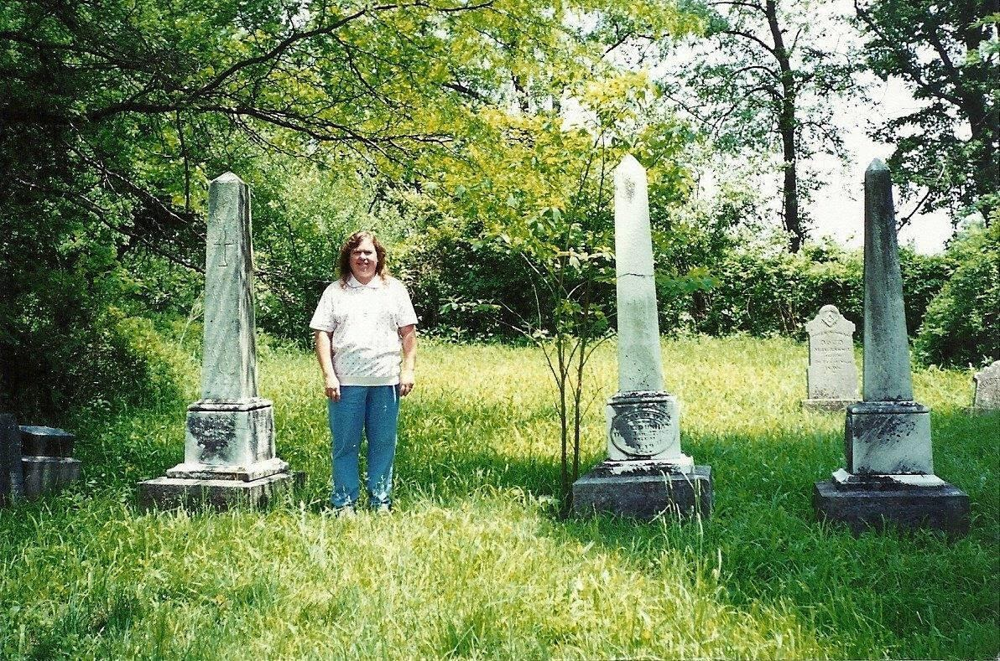
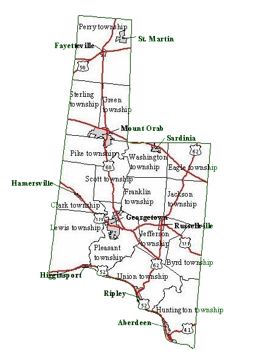

My name is Yolanda Campbell Lifter and I am the Brown County Coordinator. I am not a
resident of Ohio, but I have a special interest in Brown County as I have a number of
ancestors who resided in the county.

Visiting my Dunham ancestors in the Brisslan Cemetery, Perry Township.
Brown County was established on 1 March 1818 from the counties of Adams and Clermont. It is named
for General Jacob Jennings Brown, a War of 1812 army officer.

Township map is part of the Exurban Change Project, The Ohio State University. Permission granted for use by the Ohio State University (3 October 2005).